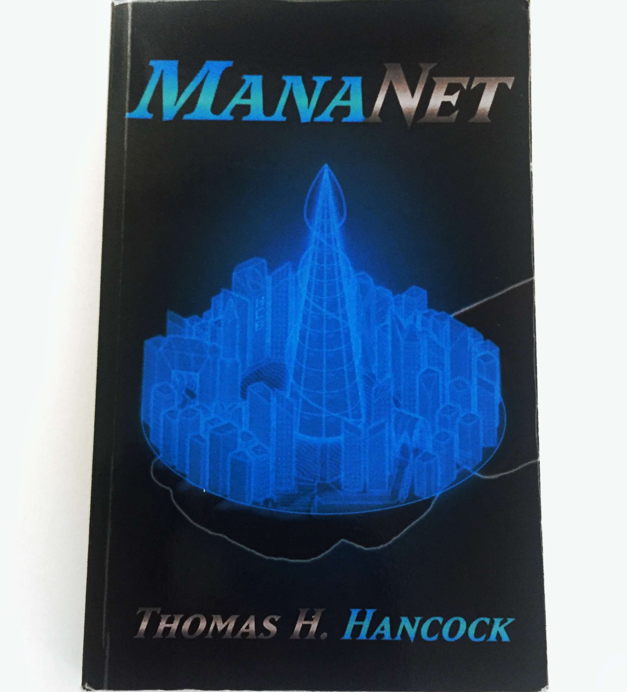

I create worlds
Thomas has always been a storyteller. Ever since he was a young boy, he has been creating stories and worlds where anything is possible. One of those worlds he shares with us in his book ManaNet.
ManaNet represents a clear blend of technology and magic: a world where magic is being transmitted over Wi-Fi. The story revolves around two characters. One is forced to feel peoples’ emotions as her own, while the other feels no emotions at all. What begins as a deadly cat-and-mouse game quickly escalates and both find themselves drawn into a plot much bigger than themselves.

When I first learned that Thomas had written a book, I was unsure what to expect. After all, I knew him as Thomas, the brilliant and kind human who loves board games and complicated equations. I met him when we were summer students at CERN and I couldn’t help but wonder, was it possible that a scientist I knew could write a good sci-fi book? The answer is no. This scientist wrote a great, breathtaking book with only one fault: the book eventually ended.
Once I closed ManaNet, I asked Thomas to meet me in R1 because I wanted to learn more about his writing experience, how he shaped his characters, his inspirations behind the story, and decisions he had made. Funny enough, at some point during the book I had seriously decided never to speak to Thomas again because of certain plot decisions. Actually, that happened more than once. However, my fascination with the book and my enormous respect for Thomas as a human, physicist, and now as a writer made that impossible. Here, I will share some parts of our conversation (with other details omitted to avoid spoiling the book for you).
Regardless of whether you are into sci-fi or not, I highly recommend that you give this book a try. Thomas’ imagination is truly limitless, and through his book, he gives us a sneak peek into his mind’s favourite playground. Use the chance to explore one corner of it. I promise you, you will not regret it.
Thomas, this book is simply amazing! ManaNet is full of twists and brilliant, complex characters, making it very hard to put it down, even when you are urgently needed in the CMS building at CERN. Was that your plan from the start or did it come naturally?
Thomas: A little bit of both. When creating the characters, my only real criterion was that none of them were “good” - everyone had to be morally grey. I think this mentality naturally led to some interesting and complex characters, as well as some tense and interesting social interactions when one character did something another disagreed with.
Along side that, I’d very recently begun watching Game of Thrones. I love the brutally effective way George R. R. Martin keeps suspense by continually killing off main characters, so after I’d created my cast I noted which ones were going to die and when. I wanted to make sure the reader never felt anyone was safe, that every time a near-death situation arose they’d be genuinely worried. In the same vein, I really like how Martin often does things deliberately contrary to what’s expected, so when making plot decisions, I’d constantly ask myself “What if the complete opposite happened?”, which is where the novel gets a lot of it’s twists from.
Personally I loved that about the book. There was also a point were you subtly reminded me that everyone has subconscious gender stereotypes and I thought to myself “Ha! That was smart!” I won’t comment on killing off the characters because I will get very upset, but I have to ask – was it difficult doing that?
Thomas: I think knowing the effect it would have on the reader made it easier, like the character wasn’t dying in vain but to cause some kind of genuine emotional reaction. I also think the fact that I’d already planned to kill them from the beginning helped. In my first novel I tried to spur-of-the-moment kill a character near the end and just couldn’t bring myself to do it. I’m glad though as they’re now one of my readers’ favourite characters.
Talking about favourite characters, do you have one?
Thomas: Definitely Victoria. She’s not only a complete badass, but she’s also incredibly strong emotionally. None of the other characters could go through what she has and survive. And she’s really fun to write.
She’s my favourite too! Reading your book, I found myself pulled into a world of jet-propelled bikes, holographic swords, and even a very clever glove, but one thing that I found very real is a world full of strong females. It was such a pleasure reading about them. Where did you find inspiration for these women?
Thomas: When creating a character I try to explore all options, but my inspiration itself comes from all my incredible friends and the obstacles they’ve overcome to get where they are. I have many female friends in physics, and they’ve all gone through far more to get to the same position I’m in now. Being surrounded by them and their desire to succeed no matter naturally inspires me to create such strong female characters. To any of you who are reading this (and you know who you are), thank you for being that inspiration.
What about the book itself - where did you find inspiration for ManaNet?
Thomas: Inspiration came from a lot of places, but mostly video games and TV shows. Similarities to the Deus Ex games are fairly obvious, but also Transistor by Supergiant. As already mentioned, Game of Thrones also provided a lot of interesting ideas in terms of how to tell the story.
In relation to my work at CERN, the large network of underground tunnels had some input, even if they eventually turned into a lake (See chapter 19, “Love”). The most specific thing I can think of is the retinal scan Matt has to pass in the aforementioned chapter. I had no idea what it was like having your eyes scanned until I had to have it done by CERN, and so that went straight into the book. A lot of the tech stuff also came from my work. For example, Owen’s via-text dialogue with Victoria uses some BASH commands to try and make it seem more legitimate.
You mentioned CERN. Is it true that you started writing ManaNet while you were a summer student?
Thomas: Not quite. I came up with the idea for ManaNet the summer before, and began writing it over the Christmas holidays. I did write a fair portion of it while I was a summer student though (If I recall correctly, chapters 19 through 21… ish). I always wrote while sitting with my friends in R1 so that I could still be sociable though.
When I finished the first chapter of the book, I thought “This should be made into a movie”. Is this something you would consider?
Thomas: Yes, yes, a million times yes. A lot of the elements are very visual by design and I’d love to see them on the big screen. And yes, if that ever happens you can play Victoria.
Hahaha… it is settled, I am playing Victoria! Now I even have it in writing! ☺ But there is something I am dying to know: will there be a second book? Please, say yes!
Thomas: When I wrote ManaNet it was designed to be strictly one-off. Clearly my mind had other ideas though, as I now have a vague plan and ~10,000 words of a sequel written. That said, I’m still figuring some stuff out, and currently other projects have captured my interest. I love the world of ManaNet and the characters though, so the answer is I hope so, but not soon.
Well, I promise you now that I will bother you about writing the sequel until you finally do it! Now, I have a few more questions if you don’t mind.
Thomas: Sure, go ahead.
What is that you liked the most in the book?
Thomas: The interplay between the characters. I love how the main characters all bicker and quarrel, yet remain resolutely by each other’s side throughout. They, at least to me, seem like true friends, and I hope that comes across to my readers as well.
It does. It really does, but that makes reading about losses even harder. Anyway. I don’t want to think about it, so tell me, is there anything in particular that you do not like about ManaNet?
Thomas: Yes, the prose. I don’t think it’s necessarily bad, but I’ve learned so much since I wrote it that at some point I plan to re-edit the whole thing and release a “2nd edition”. Probably not for a while given all my other commitments, but at some point it’s going to happen.
Indeed. You came to CERN first as a summer student and then as a visiting DPhil student during your second year of postgrad. In the meantime you finished your masters in physics and are now in your third year at Oxford University. When do you even find time to write?
Thomas: Sporadic evenings and weekends. I kind of treat it like a back-up plan. If I have a social occasion with friends then great, otherwise I’ll write. Walks to and from Uni are also good for planning and coming up with new ideas. Most of ManaNet was dreamed up walking between home and classes. I just stick some music on, begin walking, and let my mind wander.
Oh, wow. Did you always know you would end up doing this – writing books and study physics? What did you want to be when you were a kid?
Thomas: I wanted to be a Lego designer. I loved Lego growing up (and let’s be honest, still do), and have an innate desire to create things. I think that’s what led me into both writing and physics. As for when did I think I was a writer? Early teens, probably. I started writing when I was twelve, but it likely took a couple of years before the bug caught and I began getting up early every morning to write before school. Since then I’ve thought about my writing in some way pretty much every day. It’s kind of infectious.
Regarding science, as a kid physics always captured my interest. In high school I would often go to my science teacher’s office at lunch or after school to ask questions. Mostly they were related to atoms and subatomic particles, so in hindsight it seems natural that I’d end up working in particle physics. Big shout out to Dr Williams and Mr Harper for their incredible support throughout my time at school. I really wouldn’t be where I am now without them.
That is so great. I love how you managed to pursue both of your passions that you’ve carried with you since you were a child. It’s truly inspiring. Now I do have to ask, why haven’t you, up to this point, spoken about the book publicly?
Thomas: When I first released it I did post about it on Facebook (which is how my friends found out about it). Other than that though, I’ve not done anything. I don’t really feel the need to. ManaNet’s done what I intended - been a source of enjoyment for my friends who chose to read it. I write for myself and my friends, and even though I’d love it if one day my books caught on and sold millions of copies, I’m happy with where I am at the moment.
Ah, true. That is how I found out about it as well. Hopefully now somebody besides your friends will also read the book. Is there something you would like to tell to you future readers? Is there something you would like them to take from the book?
Thomas: Other than a general sense of satisfaction, I hope it makes people think about how they perceive and treat other people. While Gifteds obviously don’t exist in our world, there are numerous groups who are subject to the same kind of awful treatment, and I hope ManaNet at least makes people empathise, if not more. And for the message I’ll go with my usual: I hope you enjoy reading my books as much as I enjoyed writing them!
That is lovely, and I am sure that will be the case. And is there a message for those who’ve already read the book?
Thomas: Thank you so much for reading ManaNet, it really does mean a lot. And sorry (you know what for).
I think I speak for everyone who’s read the book when I say that apology is not accepted. I still can not believe what you did, but okay. I will get over it eventually.
For the end I would like to thank you for being my inspiration for this whole section of the blog and letting me share your book with the world. We are definitely not done talking about ManaNet, but until the next time is there anything else you would like to add?
Thomas: If you’ve ever thought “Hey, here’s a good idea for a book”, sit down and try writing it! Anyone can be an author, you just need patience and a bit of dedication.